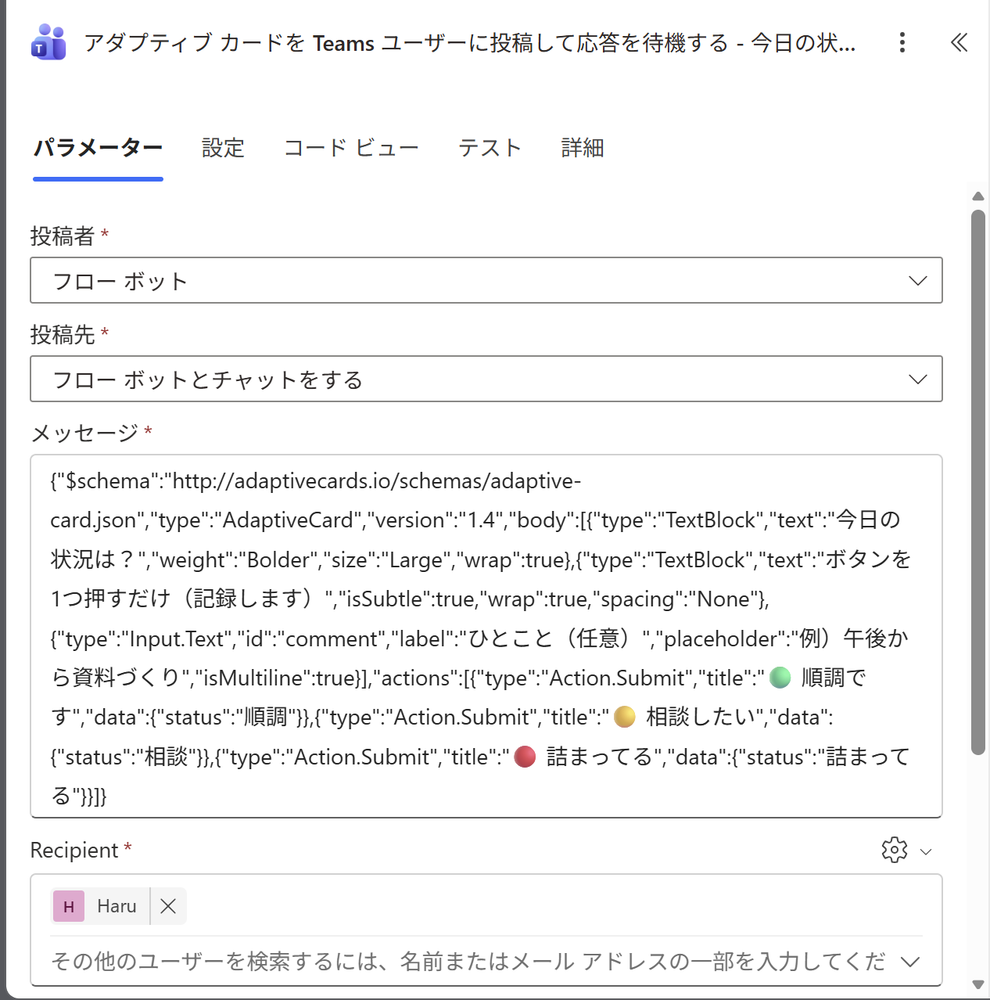
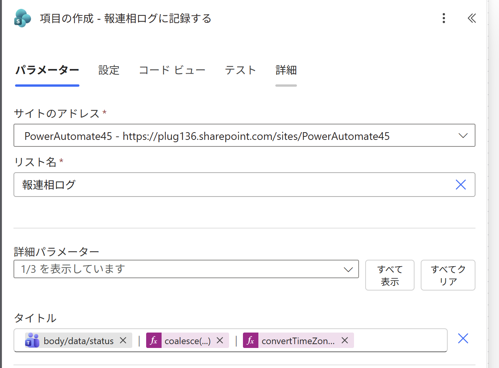
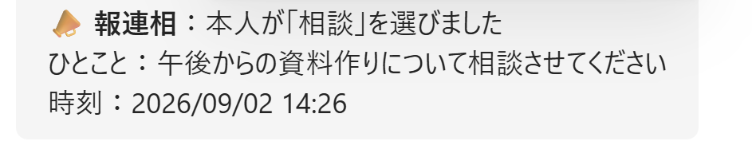
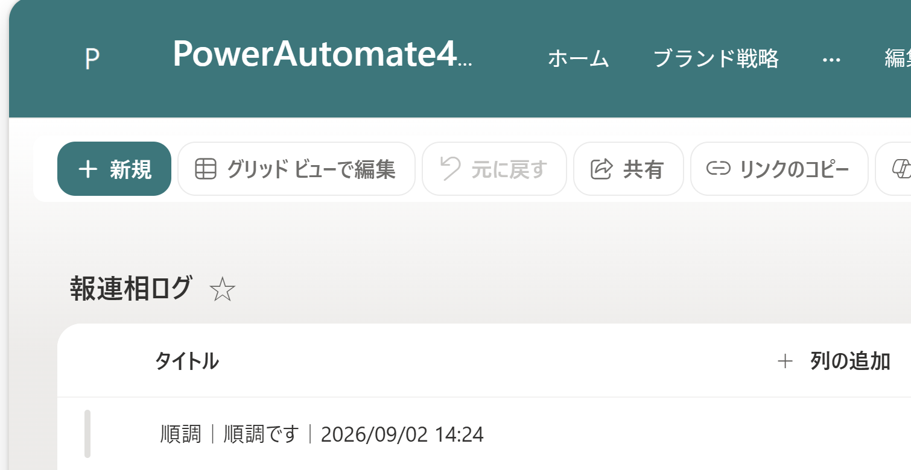

作るものは2つ。記録先のSharePointリストを1つと、Teamsに「ワークフロー」アプリが入っているかの確認だけです。
Power Automate で「最初から作成」→ スケジュール済みクラウド フローを選びます。
Teams の 「アダプティブ カードを Teams ユーザーに投稿して応答を待機する」を追加します。ここが今日いちばんの山場です。

{"$schema":"http://adaptivecards.io/schemas/adaptive-card.json","type":"AdaptiveCard","version":"1.4","body":[{"type":"TextBlock","text":"今日の状況は？","weight":"Bolder","size":"Large","wrap":true},{"type":"TextBlock","text":"ボタンを1つ押すだけ（記録します）","isSubtle":true,"wrap":true,"spacing":"None"},{"type":"Input.Text","id":"comment","label":"ひとこと（任意）","placeholder":"例）午後から資料づくり","isMultiline":true}],"actions":[{"type":"Action.Submit","title":"🟢 順調です","data":{"status":"順調"}},{"type":"Action.Submit","title":"🟡 相談したい","data":{"status":"相談"}},{"type":"Action.Submit","title":"🔴 詰まってる","data":{"status":"詰まってる"}}]}
上の メッセージ欄に貼るカードJSON は、大きく3つのかたまり（①おまじない／②body＝見せる中身／③actions＝ボタン）でできています。フローで「受け取る」のは、ひとことと押した答えの2つだけです。
| JSONの部品 | 意味（なにをする？） | フローでの受け取り方 |
|---|---|---|
| ① おまじない（型宣言）― 「カードですよ」の宣言。ふつう触らない | ||
$schema / "type":"AdaptiveCard" / "version":"1.4" | 「これはアダプティブカードです」という決まり文句。設計図の種類とバージョン。 | 受け取らない |
| ② body（画面に見せる中身・上から順に並ぶ） | ||
TextBlock「今日の状況は？」 | 見出し（weight:Bolder / size:Large＝太字・大きめ）。 | 表示だけ |
TextBlock「ボタンを1つ…」 | 小さい説明（isSubtle＝うすいグレー字）。 | 表示だけ |
Input.Text id:"comment" | ひとこと入力欄（任意・複数行）。id が受け取るときの名前になる。 | body/data/comment |
| ③ actions（ボタン）― 押すと送信される | ||
Action.Submit ×3 | title＝画面の文字（🟢 順調です 等）／data の status＝送られる答え（順調／相談／詰まってる）。 | body/data/status |
JSONを手書きすると記号のミスが起きやすく、直しに時間がかかります。初心者は書かず、M365 Copilot チャット（Power Automate内蔵のCopilotではなく）に頼んで作るのが速いです。頼み方は次の3つ。
Adaptive Card 1.4 の JSON だけを作ってください。要素は次の通り： ・見出し『今日の状況は？』（太字・大きめ） ・小さい説明『ボタンを1つ押すだけ（記録します）』 ・任意の複数行入力『ひとこと』（id は comment） ・ボタン3つ（Action.Submit）：🟢 順調です（data.status=順調）／🟡 相談したい（data.status=相談）／🔴 詰まってる（data.status=詰まってる） 説明文は不要、JSON だけ返してください。
"style":"emphasis"（グレー地）で出すことがあります。カードデザイナー／プレビューで見た目を確認し、違えば直します（第20回のCopilot実演でも同じ癖が出ました）。カードの下に、SharePoint 「項目の作成」を追加します。タイトル1列に3つの情報を並べて記録します。

body/data/status
coalesce(triggerBody()?['comment'],'（ひとことなし）')
convertTimeZone(utcNow(),'UTC','Tokyo Standard Time','yyyy/MM/dd HH:mm')
| 式の部品 | なにをする？ | 今回の値 |
|---|---|---|
body/data/status | 押したボタンの答え（data.status）を取り出す。🟢なら「順調」。 | 順調 |
coalesce(comment,'（ひとことなし）') | coalesce＝前が空なら後ろを使う。ひとこと未入力なら「（ひとことなし）」に。 | 順調です |
convertTimeZone(utcNow(),'UTC','Tokyo Standard Time','yyyy/MM/dd HH:mm') | 今の時刻（UTC）を日本時間に直して、決めた書式の文字にする。 | 2026/09/02 14:24 |
記録の下に 「条件」を追加し、「順調」でないときだけ上司へ知らせます。
📣 報連相：本人が「［状態］」を選びました ひとこと：［ひとこと］ 時刻：［日本時間の日時］

